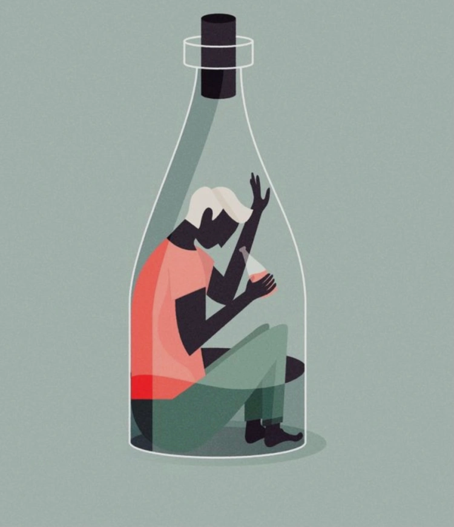
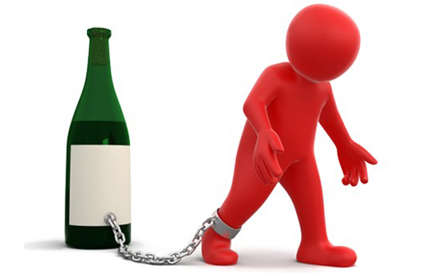

Alkol bağımlılığı, bir bireyin alkol tüketimine karşı fiziksel veya psikolojik bir bağımlılık geliştirmesi durumudur. Bu durum, kişinin alkolü kontrol edememesi, alkol tüketimini sürdürmek için giderek artan miktarlarda alkol tüketmesi ve alkol tüketimini durdurmak veya azaltmak için ciddi zorluklar yaşaması ile karakterizedir.
Alkol bağımlılığı, genetik faktörler, çevresel etkiler, psikolojik durum ve sosyal faktörler gibi birçok etmenin karmaşık etkileşimiyle ortaya çıkabilir. Bu faktörlerin kombinasyonu, bir bireyin alkol bağımlılığı riskini artırabilir.
Alkol bağımlılığının belirtileri arasında sürekli alkol arzusu, alkol tüketimini kontrol edememe, alkol tüketimini gizleme veya yalan söyleme, alkol nedeniyle iş, okul veya sosyal ilişkilerde sorunlar yaşama ve alkol tüketimini sürdürebilmek için mali veya yasal sorunlarla karşılaşma bulunur.
Alkol bağımlılığı, ciddi sağlık sorunlarına, ilişki sorunlarına, iş kaybına, hukuki sorunlara ve diğer birçok olumsuz sonuca yol açabilir. Ancak, tedavi ve destek ile birlikte, alkol bağımlılığıyla başa çıkmak mümkündür. Tedavi genellikle terapi, destek grupları ve gerekirse tıbbi müdahaleleri içerebilir. Alkol bağımlılığıyla mücadele etmek için erken tanı ve müdahale önemlidir. Kişinin kendisi veya bir sevdiklerinin alkol bağımlılığından şüphelenmesi durumunda, bir sağlık uzmanına veya bağımlılık uzmanına başvurması önemlidir.